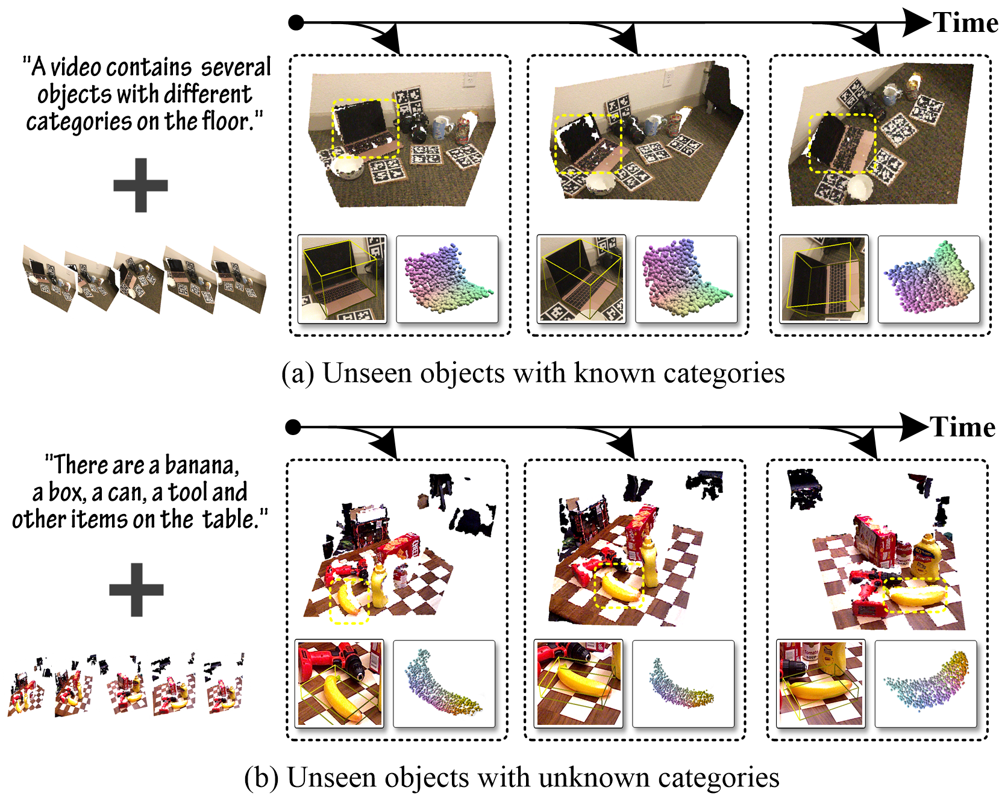
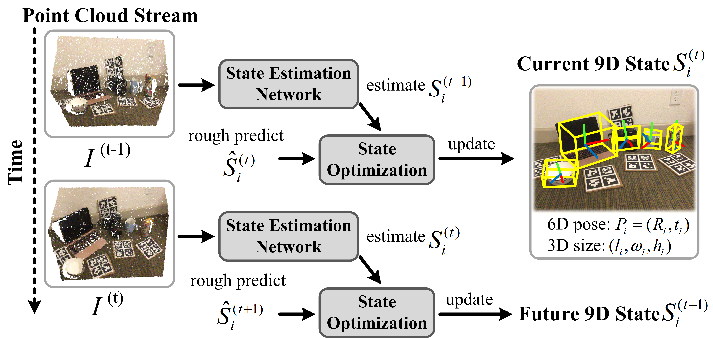
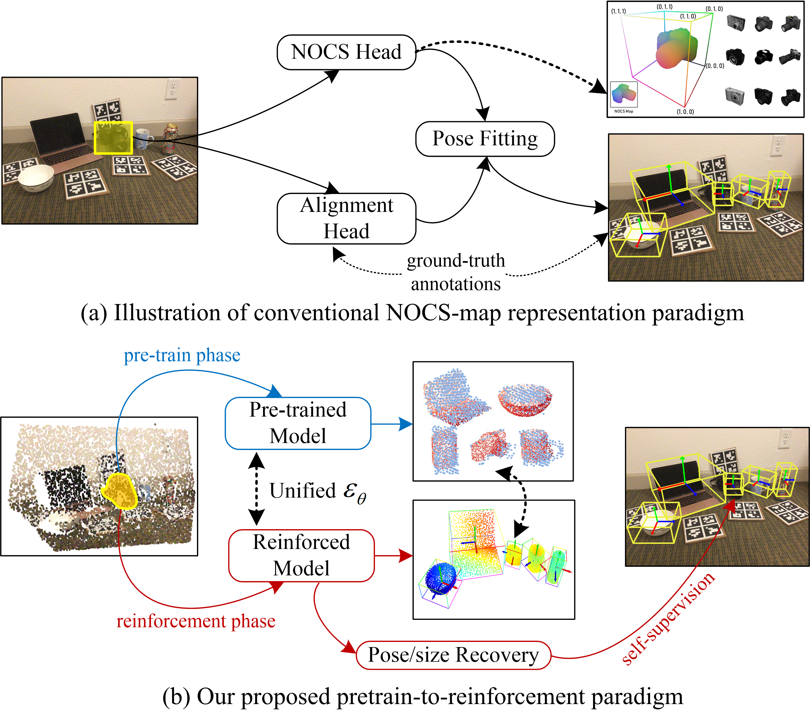
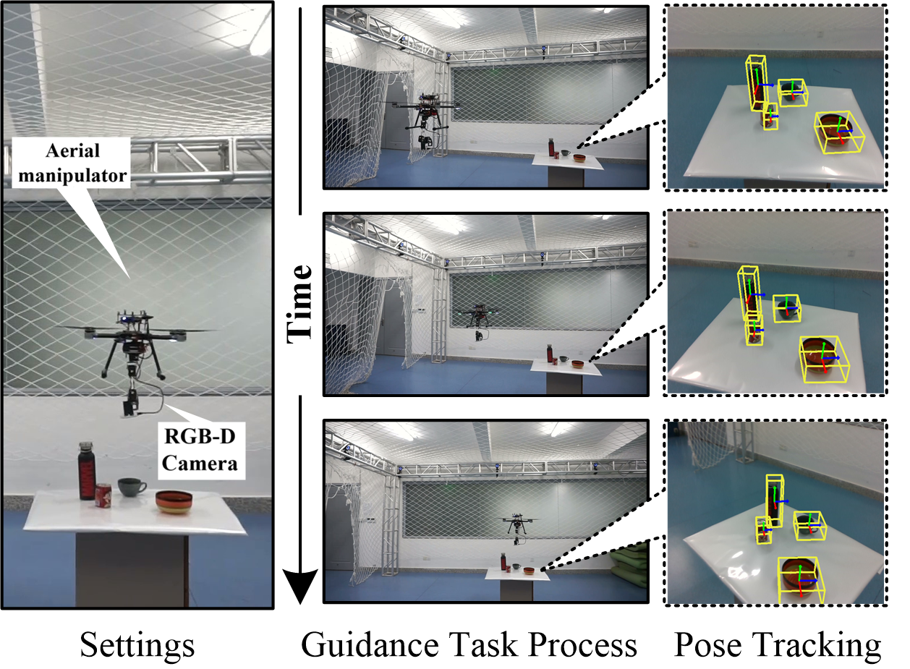
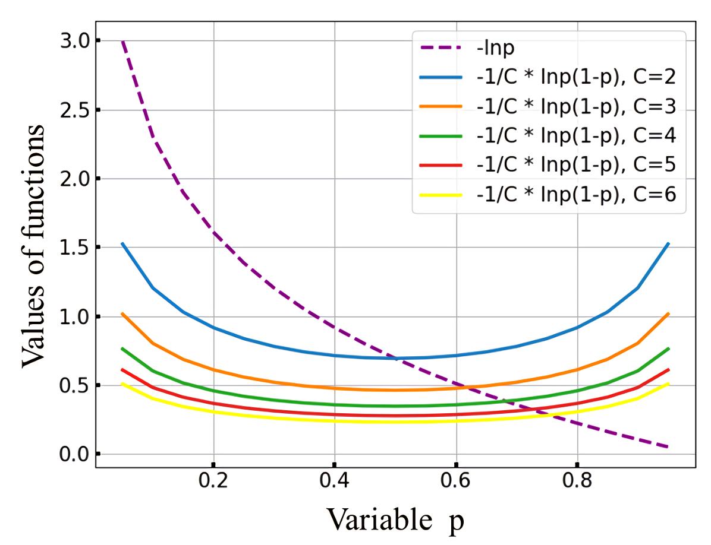
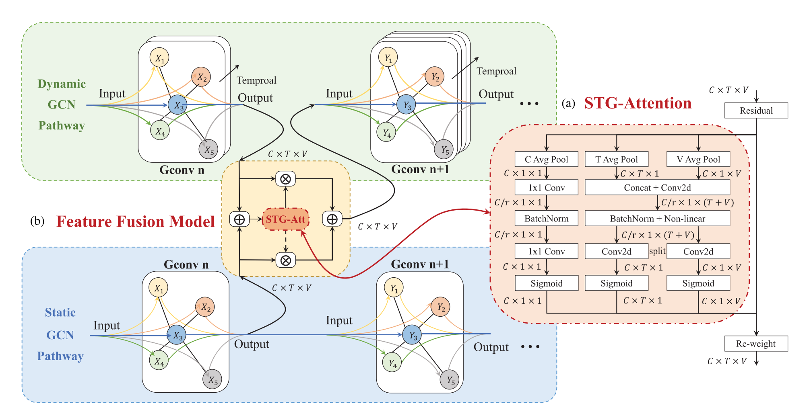
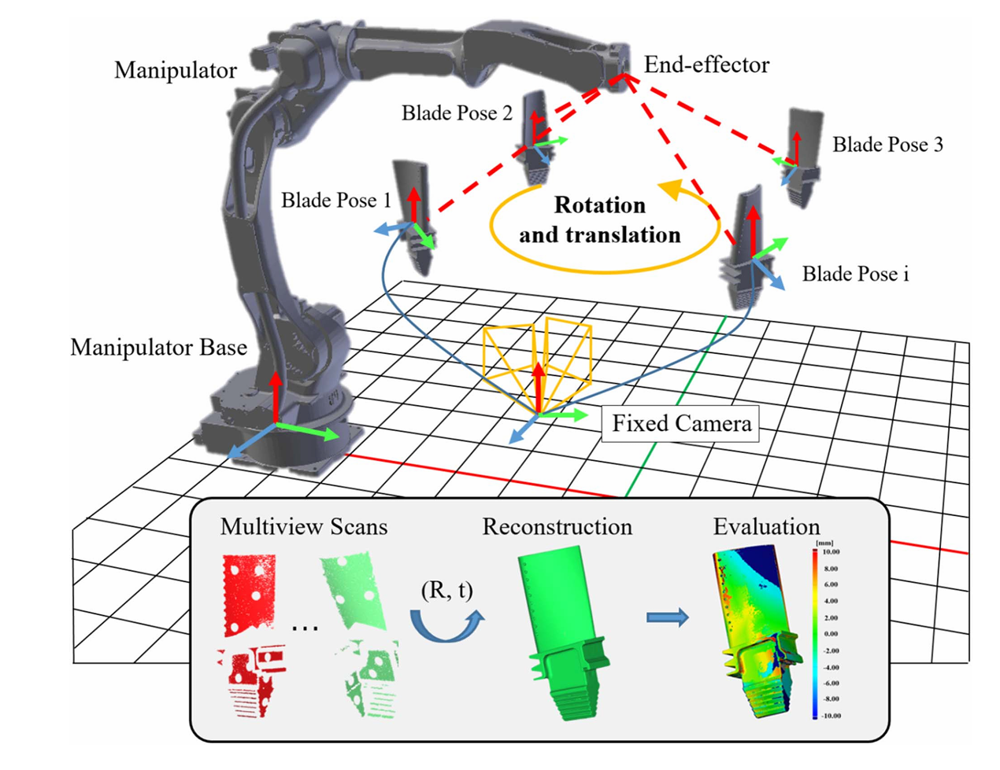

|
Jingtao Sun I am currently a final‑year Ph.D student at NERC-RVC at Hunan University, under supervision of Prof. Yaonan Wang. Currently, I am also a visiting scholar at the Show Lab in the National University of Singpore (NUS), advised by Prof. Mike Zheng Shou. Before that, I received my bachelor’s degree and master’s degree from Hunan University, supervised by Prof. Yaonan Wang. My current research interests lie at 3D Computer Vision and Robot Learning. Specifically, I am interested in 6-DoF pose estimation, 3D shape reconstruction and multi-modal. I am also interested in diffusion-generating model for 3D vision and generalist robot policy, and applications in real-world robotic tasks. I am looking for PostDoctoral/Research Fellow position, and if you are interested in my work and research, please drop me an email at jingtaosun@hnu.edu.cn. |
{kind=link}
Selected Research
|
|

|
L4D-Track: Language-to-4D Modeling Towards 6-DoF Tracking and Shape Reconstruction in 3D Point Cloud Stream
Jingtao Sun, Yaonan Wang, Mingtao Feng, Yulan Guo, Ajmal Mian, Mike Zheng Shou, CVPR, 2024 project page / code / arXiv our method achieves real-time, causal 6-DoF pose tracking while reconstructing the 3D shape in the current observation. It not only enables zero-shot inference for unseen objects with known categories, but also perfectly showcases the zero-shot capabilities for unseen objects with unknown classes. |

|
ICK-Track: A Category-Level 6-DoF Pose Tracker Using Inter-Frame Consistent Keypoints for Aerial Manipulation
Jingtao Sun, Yaonan Wang, Mingtao Feng, Danwei Wang, Jiawen Zhao, Cyrill Stachniss, Xieyuanli Chen, IROS (Oral Presentation), 2022 project page / video / paper Developing a real-time category-level object 6-DoF pose tracking that can be applied to aerial manipulation without using any pre-defined object CAD models. |
|

|
Category-Level Multi-object 9D State Tracking Using Object-Centric Multi-scale Transformer in Point Cloud Stream
Jingtao Sun, Yaonan Wang, Mingtao Feng, Xiaofeng Guo, Huimin Lu, Xieyuanli Chen, IEEE Transactions on Multimedia (TMM), 2023 project page / paper We focus on category-level multiobject 9-Dimensional (9D) state tracking from the point cloud stream, and propose a novel 9D state estimation network with Kalman-based state optimization to estimate the 6-DoF pose and 3D size of each instance in the scene. |
|

|
Diffusion-Driven Self-Supervised Learning for Shape Reconstruction and Pose Estimation
Jingtao Sun, Yaonan Wang, Mingtao Feng, Chao Ding, Mike Zheng Shou, Ajmal Mian, arXiv (Under review, submitted to TPAMI), 2024 project page / arXiv Introducing a diffusion-driven self-supervised network for multi-object shape reconstruction and categorical pose estimation, only leveraging the shape priors. |
|

|
Towards Real-World Aerial Vision Guidance with Categorical 6D Pose Tracker
Jingtao Sun, Yaonan Wang, Danwei Wang, arXiv (Under review, submitted to TPAMI), 2024 project page / video / arXiv We investigate the real-world robot task of aerial vision guidance for aerial robotics manipulation, utilizing category-level 6-DoF pose tracking. |
|

|
Pixel-Level Noise Mining for Weakly Supervised Salient Object Detection
Mingtao Feng, Kengdong Liu, Wei Zhao, Jingtao Sun, Yinou Zhang, Yaonan Wang, Ajmal Mian, arXiv (Under review, submitted to TNNLS), 2024 paper / code We propose a pixel-level noise mining framework for robust salient object detection by exploiting its own knowledge, and without the need for external models. |
|

|
A Fast-Response Dynamic-Static Parallel Attention GCN Network for Body-Hand Gesture Recognition in HRI
Xiaofeng Guo, Qing Zhu, Yaonan Wang, Yang Mo, Jingtao Sun, Kai Zeng, Mingtao Feng, IEEE TRANSACTIONS ON INDUSTRIAL ELECTRONICS (TIE), 2023 paper We propose a dynamicstatic parallel network for dynamic body gestures and a spatiotemporal graph attention module to improve the graph data fusion effect in the dynamic-static network. Finally, we implement a complete command module to form complete commands with body and hand information for interactions and control of the mobile robot. |
|

|
Gravitational Discriminative Optimization for Multiview Reconstruction of Free-Form Surface
Zijie Wu, Yaonan Wang, He Xie, Mingtao Feng, Haotian Wu, Xuebing Liu, Jingtao Sun, IEEE/ASME Transactions on Mechatronics (T-Mech), 2023 paper We propose a novel gravitational discriminative optimization (GDO) method based on a multiview reconstruction framework for shape surface reconstrcution. It consists of a training phase and a reconstruction phase. |